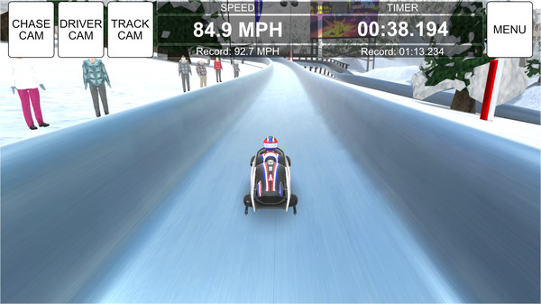

I am a massive fan of the sledding sports: bobsled, skeleton and luge. But skeleton is by far my favorite. And though watching the sports is great, I wanted more of a simulator to play to experience the true thrill of flying down a sheet of ice at 70 miles per hour. Issue is, there are very few games for this sport. The closest you'll get is the occasional street luge game, which isn't even close. So I spent some time roaming the vast recesses of the internet looking for the game that I wanted. Soon I found it. That game was called "BSL winter games challenge." It cost me two dollars on steam and it might have been the best 2 dollars I've ever spent.
So normally on this site I do a pretty basic review, don't go too into detail. Though this game I feel deserves a more in depth review. The first thing I want to talk about is the fundamental gameplay. I was curious, since it is basically a racing game where there is no "accelerate" key, nothing to add momentum. It's a sport where you go downhill at a slight incline and depend on your previous momentum and not hitting walls. To my surprise, they made it work extremely well. If you hit a wall, you lose some speed, but after just kind of barely moving there at 5 mph, you soon get out of the curve, hit a slight incline, and you're getting going again.
Steering is another thing they did well. The steering system needs to be touchy enough that you can't just press a key whenever you need to and go around the curve perfectly. You just can't. So in this they used moving your mouse from side to side as the steering. Very clever. It made it so it was just tricky enough to move the mouse just the right amount and steer your way through the turn.
Now to other parts of the game. There are a few different tracks to pick from, each from different countries, and also one from the north pole. That part is slightly interesting and I don't reccomend that mode. As for countries to pick from, there are many. I tend to stick with Latvia, the country I cheer for in real life skeleton. But if you don't like Latvia (what is wrong with you???) there is USA, germany, russia, austria, etc.
All in all this is one of my new favorite games and if you're interested and have 2 dollars to spare, download it from it's steam page: BSL Winter Games Challenge on Steam. You just might enjoy it too.